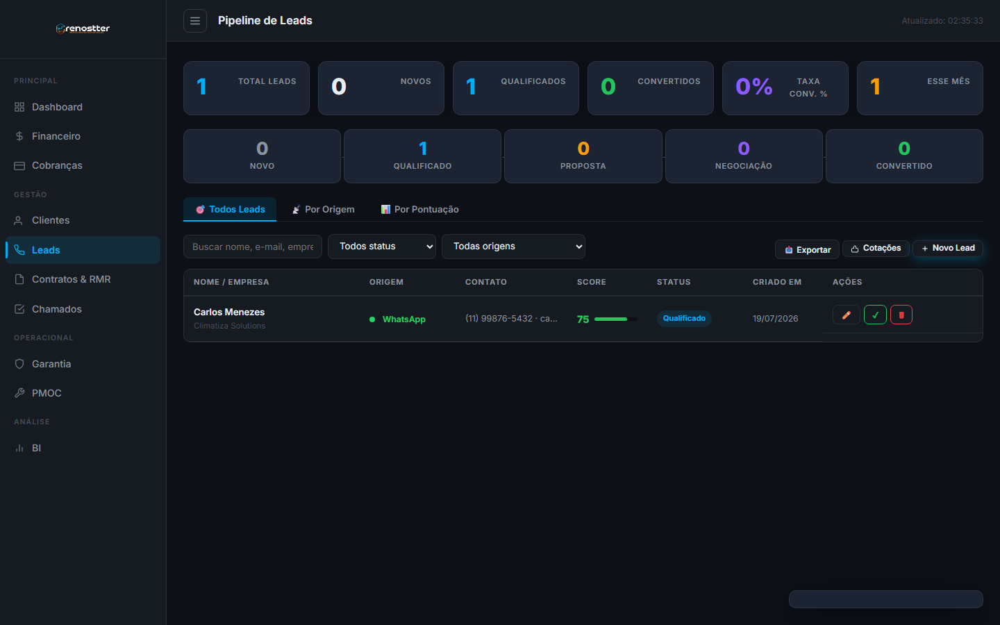
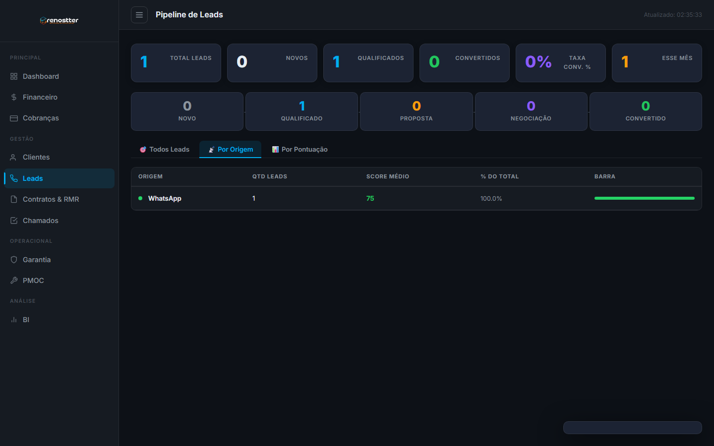

1Visão geral
O módulo de Leads é a porta de entrada do funil de vendas. Captura potenciais clientes, qualifica via scoring automático, e move através do pipeline até virar cliente (que então alimenta os módulos de Cotação, Contratos e PMOC).
Por que existe
Antes deste módulo, leads chegavam por whatsapp, formulário do site, indicação, ligação fria e ficavam em uma planilha compartilhada. Problemas:
- Sem rastreio de origem → impossível saber qual canal traz mais resultado
- Sem qualificação objetiva → leads ruins tomam tempo do vendedor
- Sem funil visível → gerente não sabe onde cada lead está
- Sem alertas de follow-up → leads esfriam
O módulo resolve com: captura multi-canal, scoring 0-100 baseado em sinais objetivos, funil visual, follow-up automático, e conversão 1-clique para cliente.
Quem usa
- SDR (pré-vendas) — cadastra leads, faz primeiro contato, qualifica
- Vendedor — pega leads qualificados, conduz negociação, fecha venda
- Gerente comercial — acompanha funil, identifica gargalos, treina equipe
- Marketing — analisa performance por origem, otimiza canais
2O funil de 5 etapas
Todo lead passa por 5 status sequenciais. A passagem é automática baseada em score e em ações do vendedor.
| Status | O que significa | Critério para entrar | Próximo passo |
|---|---|---|---|
| Novo | Acabou de chegar, sem contato | Cadastro inicial | SDR faz primeiro contato em < 24h |
| Qualificado | Tem fit (porte, segmento, orçamento) | Score ≥ 60 OU análise manual do SDR | Passa para Vendedor |
| Proposta | Recebeu cotação | Vendedor criou cotação vinculada | Aguarda decisão do lead |
| Negociação | Lead pediu ajustes / contra-proposta | Marcado manualmente | Fechar ou descartar |
| Ganho | Virou cliente (fechou venda) | Cotação aprovada | Cliente entra no módulo Clientes |
| Perdido | Recusou ou sumiu | Marcado manualmente | Reativar em 3-6 meses |
• Lead qualificado + Cotação criada com lead_id + Aprovação = Cliente criado automaticamente
• Lead vira cliente quando cotação é aprovada (status muda para ganho e converted_to_cliente_id é preenchido)
3Engine de scoring (0-100)
O score é calculado automaticamente a cada atualização do lead, baseado em sinais objetivos. Quanto maior, mais "quente" o lead está.
Sinais positivos (somam pontos)
| Sinal | Pontos | Como é detectado |
|---|---|---|
| Veio de WhatsApp (alta conversão) | +15 | Origem = whatsapp |
| Veio de indicação de cliente | +20 | Origem = indicacao |
| Veio de evento/feira | +10 | Origem = evento |
| Tem e-mail corporativo | +5 | E-mail contém domínio da empresa |
| Tem telefone preenchido | +5 | Telefone não vazio |
| Empresa de porte médio/grande | +10 | Segmento detectado via CNPJ |
| Já é cliente em outro produto | +15 | Cliente existe com mesmo CNPJ |
| Urgência explícita ("preciso pra ontem") | +10 | Análise de texto nas observações |
| Orçamento declarado > R$ 5.000 | +10 | Campo "orcamento_estimado" |
Sinais negativos (subtraem pontos)
| Sinal | Pontos | Como é detectado |
|---|---|---|
| Só tem e-mail genérico (gmail/hotmail) | -5 | Domínio não-corporativo |
| Sem telefone | -5 | Campo vazio |
| Sem empresa | -10 | Campo vazio |
| Já recusou cotação anterior | -15 | Histórico de cotações rejeitadas |
| Não responde há +30 dias | -20 | Última interação > 30 dias |
Faixas de score
| Score | Faixa | Ação recomendada |
|---|---|---|
| 0-29 | Frio | Nutrição de conteúdo (e-mail marketing, espera) |
| 30-59 | Morno | SDR faz primeiro contato, qualifica |
| 60-79 | Qualificado | Passa para Vendedor (critério: score ≥ 60) |
| 80-100 | Quente | Prioridade alta, atende em < 4h |
4Acesso rápido
Para abrir o módulo:
- Sidebar → menu Gestão → Leads
- URL direta:
http://localhost:3000/crm/admin/leads.html - PWA técnico tem um botão "Adicionar Lead" também

5As 3 abas do módulo
| Aba | O que mostra | Quando usar |
|---|---|---|
| 🎯 Todos Leads | Lista geral com todos os status + busca/filtros | Operação do dia-a-dia |
| 📡 Por Origem | Agrupado por canal (whatsapp, site, evento, etc) | Análise de marketing, ROI por canal |
| 📊 Por Pontuação | Ordenado por score (maior primeiro) | Priorização — atender os mais quentes primeiro |
5.1 Todos os Leads
Visão geral. Lista todos os leads com filtros por status, origem e busca textual (nome, e-mail, empresa).
5.2 Por Origem
Análise de canal de aquisição. Cada bloco mostra: total de leads daquele canal, taxa de conversão e ticket médio convertido.

5.3 Por Pontuação
Leads ordenados do maior score para o menor. Permite ao vendedor focar nos leads mais quentes primeiro.
6Como criar um lead
- Clique + Novo Lead no canto superior direito
- Preencha o nome (obrigatório) — pode ser nome completo ou "A definir"
- Selecione a origem (obrigatório) — sistema já calcula o score parcial
- Preencha e-mail e telefone se tiver (cada um +5 pontos)
- Preencha a empresa se souber (+10 pontos)
- Adicione observações com sinais que o sistema detecta (ex: "preciso urgente")
- Defina o status inicial (geralmente "novo")
- Salve — score é calculado automaticamente
Mesmo que você só tenha o telefone, preencha tudo que souber. Quanto mais campos, mais alto o score, melhor a priorização. Use o campo observações para anotar contexto da primeira conversa (palavras-chave como "urgente", "orçamento aprovado" disparam pontos extras).
7Como converter lead em cliente
A forma mais rápida é via cotação. Quando o lead recebe uma cotação e aprovou, o sistema automaticamente:
- Cria um cliente no módulo Clientes (com dados do lead)
- Vincula o
cliente_idna cotação - Muda o status do lead para
ganho - Preenche
converted_to_cliente_ideconversion_date
Manual: na lista, clique no botão verde ✓ na linha do lead (se for um lead qualificado sem cotação).
8Boas práticas
✅ Faça
- Sempre preencha a origem — sem ela, o score não calcula e o funil fica cego
- Atualize o status ao longo do funil — vendedor muda de "qualificado" para "proposta" quando cria cotação
- Use observações ricas — anote contexto que humanos entendem (ex: "Cliente quer comparar com 2 concorrentes")
- Qualifique em até 48h — leads quentes viram frios rápido
- Revise leads > 60 dias sem interação — marcar como "perdido" ou reativar
❌ Evite
- Não pule o status "qualificado" — leva lead direto de novo para proposta sem scoring
- Não delete leads perdidos — mantenha histórico para análise de churn
- Não confie 100% no score — use como filtro, mas valide com conversa humana
9API reference (resumo)
GET /api/leads
Lista leads com filtros opcionais: status, origem, search, sort, limit.
POST /api/leads
Cria novo lead (com scoring automático).
POST /api/leads
{
"nome": "João Silva",
"email": "joao@empresa.com.br",
"telefone": "(11) 99876-5432",
"empresa": "Empresa XYZ",
"origem": "whatsapp",
"observacoes": "Cliente precisa urgente, orçamento aprovado",
"orcamento_estimado": 8000
}GET /api/leads/:id
Detalhe completo do lead + histórico de interações.
PUT /api/leads/:id
Atualiza dados. Score é recalculado se mudar nome, e-mail, telefone, empresa, origem, observações.
DELETE /api/leads/:id
Remove lead (use com cuidado — prefira marcar como "perdido").
GET /api/leads/stats
KPIs: total, novos (últimos 30d), qualificados, taxa de conversão, score médio, leads por origem.
{
"total": 147,
"novos_30d": 23,
"qualificados": 38,
"convertidos": 15,
"taxa_conversao": 10.2,
"score_medio": 52.3
}GET /api/leads/origins
Performance por canal de aquisição. Use para decidir onde investir marketing.
GET /api/leads/statuses
Lista os status válidos (para popular dropdowns).
• README geral · Guia de Cotação · Guia de Chamados
• Arquitetura do ERP · Análise de Fluxo ERP